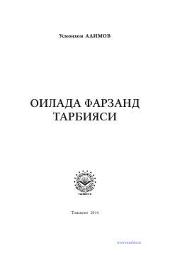

OFIslomiy qadriyatlar asosida farzand tarbiyalash bo'yicha qo'llanma.
Ushbu kitobda islom ta'limoti asosida farzand tarbiyasi, ota-onaning burchlari va oila muqaddasligi haqida so'z boradi. Muallif yosh avlodni ma'naviy va jismoniy jihatdan barkamol qilib voyaga yetkazishda ota-onalar va ustozlar uchun muhim tavsiyalar beradi.